Clinical Trial Screening Discovery
2020We've known for a while that our inability to support the screening phase of clinical trials was a product gap. To understand how to shape the requirements, I partnered up with the Science and Product teams to understand clinical trial site and participant needs.
TLDR
Team
Use Case Matrix
We scraped information from the study protocols we have access to and compiled it into one spreadsheet, allowing us to shape the configurability for setting up a study in our system.
Stakeholder Interviews & Surveys
We interviewed the CEO, President, VP of Customer Success, VP of Project Management, a Director of Sales, and a Project Manager and surveyed our Site Advisory Board. The affinity map below shows what was discussed in those conversations/responses.We understood that supporting screening was table stakes functionality—it may not necessarily add marketable value to our product, it would save the cost/time of roundabout manual work our users have to perform in order for the system to function as needed.

Site and Participant User Journey
Based on the themes, we pieced together a user journey for both the participant and the site sides. We validated the journey and the experience scale with the Site Advisory Board in a workshop.


User Story Mapping
Project Management, Science, Product, and Design collectively came up with 49 user stories, leveraging the user journey to guide the discussion. The output was a set of all possible stories for participants and sites in the context of our platform.

Project, Science, Product, and Design assigned a value for each of the user stories based on our aligned-understanding of the user journies — since Project Management and the Science team were our primary stakeholders, their assigned values were weighted higher.

Case Management System
2019At the request of a pharmaceutical client, I designed a feature for case managers for a clinical trial. I am currently working closely with our front-end and back-end engineers for the first build.
TLDR
Team
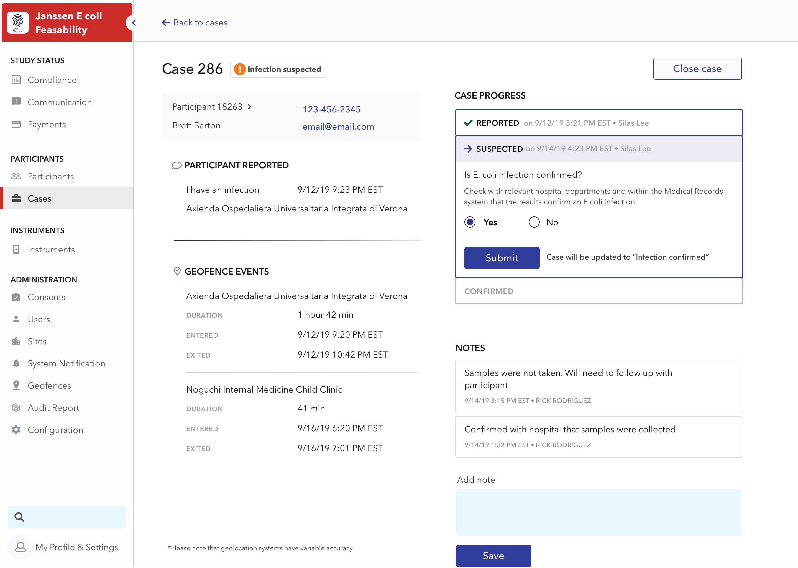
Background
This feature would be the most front-end involved of the custom features we had to build for the vaccine trial. I lead the design for all features of the end-to-end solution, including- 1. geofence creation feature for study admin
- 2. a participant-facing chatbot (with location-based conditions)
- 3. workflow for creating of new cases
- 4. case feature for case managers - which is what we're talking about right now
Research
Interviews
When we kicked off our project, I interviewed our Chief Deputy Science Officer and our Research Assistant who have had experience as case managers at prior jobs. The conversations helped me find a footing for what they were generally looking for.- • They preferred having more flexibility over having less room for error
- • Due to regulatory reasons, user should not be able to "undo" actions
- • Note taking has to be general and not tied to a specific state
Userflow
I synthesized the requirements that came in piecemeal and created this userflow for final approval from the client.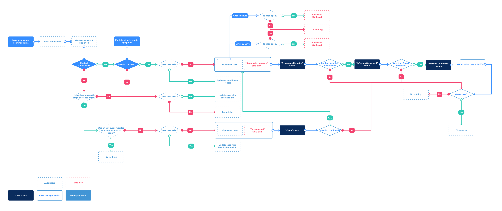
Information architecture
To make the cases easier to track, I created 4 different states to align to the question the case manager had to answer in the progression of the case. Depending on their answer to questions, the case would progress from "Open case", "Reported (symptoms)", "Suspected infection", and "Confirmed infection".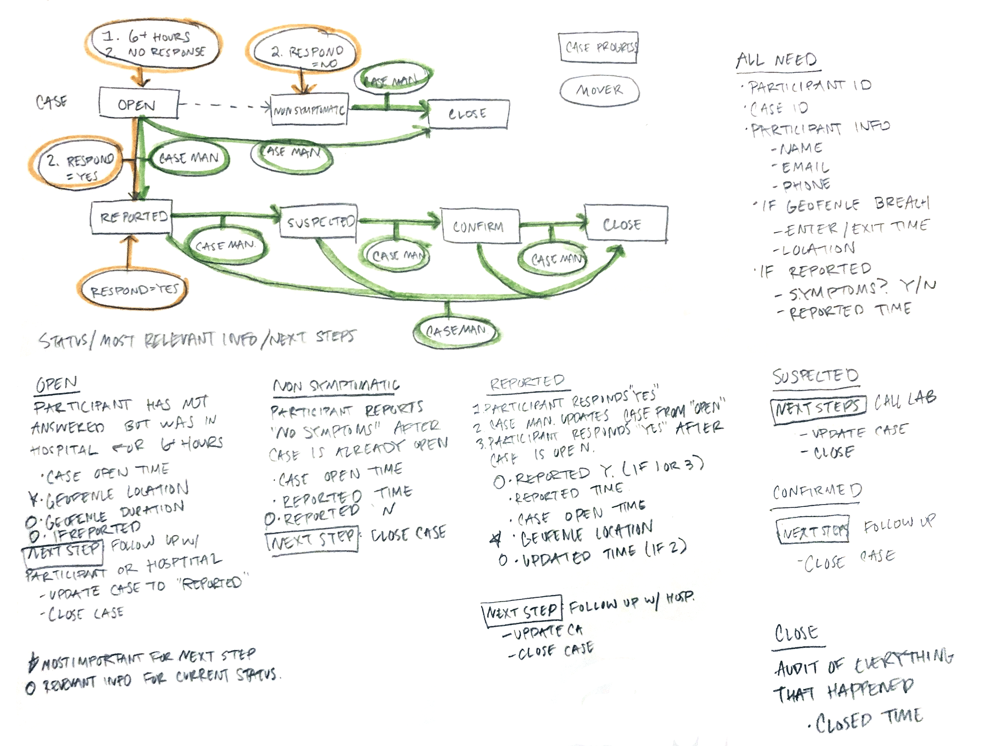
Wireframes
From the breakdown above, I had a good understanding of the most relevant information tied to case manager's actions. I designed the layout so that as the case manager reads from left to right, they can glance at what information they need and directly on the right, answer the question that they need to answer regarding the case.Items such as PII (Personally identifiable information) would remain at the top.
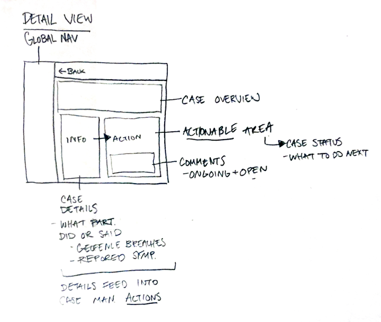
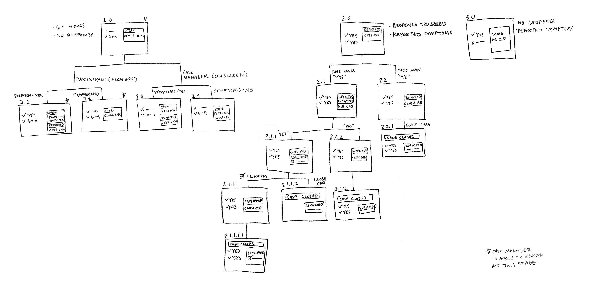
Interface
I worked off of a design system that UX designer, Jewelia Kim, had created before. For the new components, I derived the styling off of patterns and added them to the library.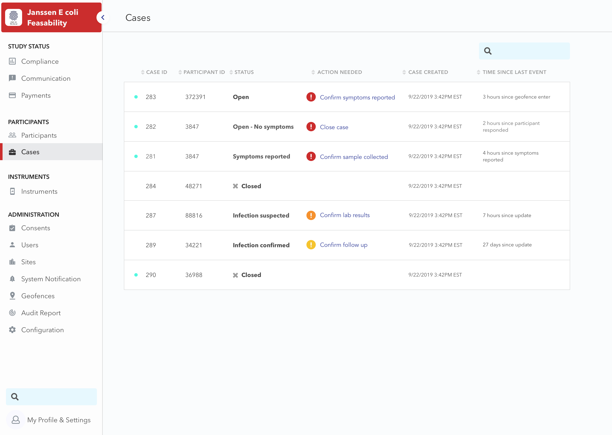
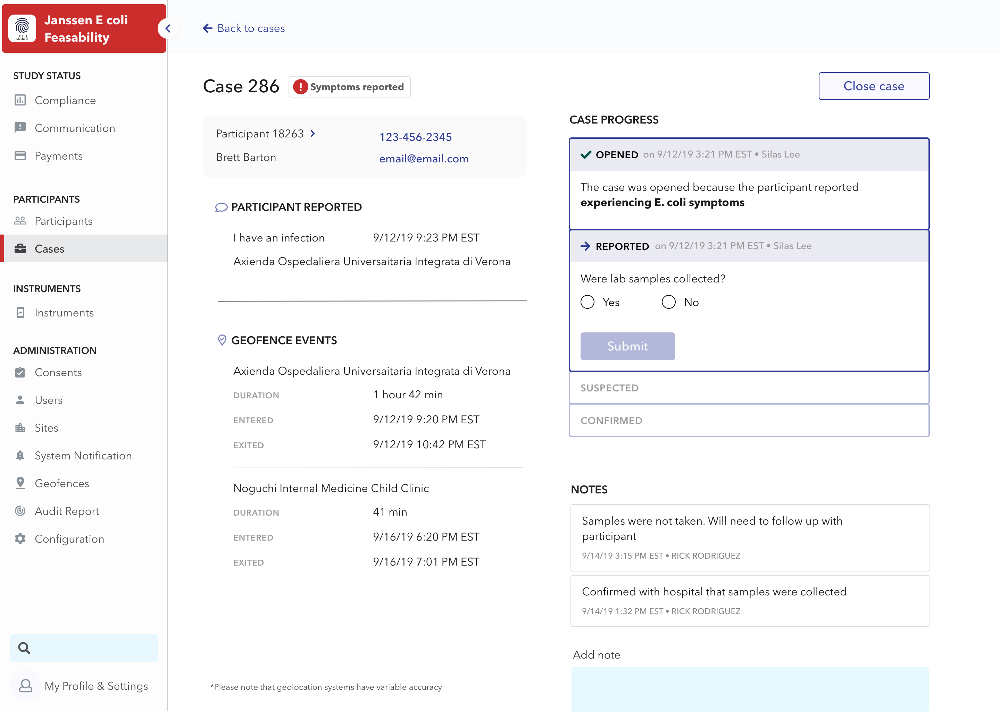
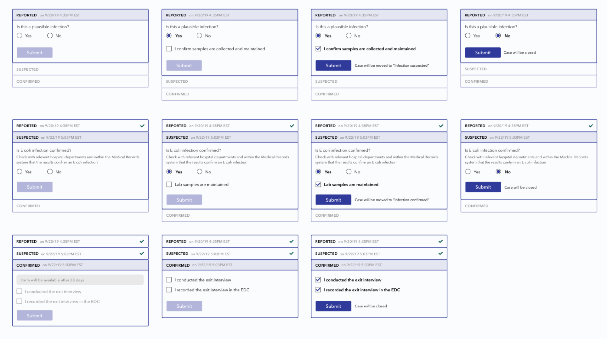
Development
To better communicate the conditions around the different states to developers, I've created truth tables. So far, it's been a great process working closely with back-end and front-end engineers to talk through workarounds. The release date for this feature is January 2020.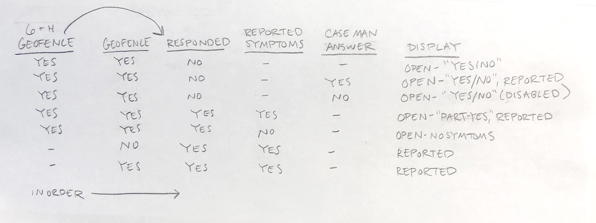
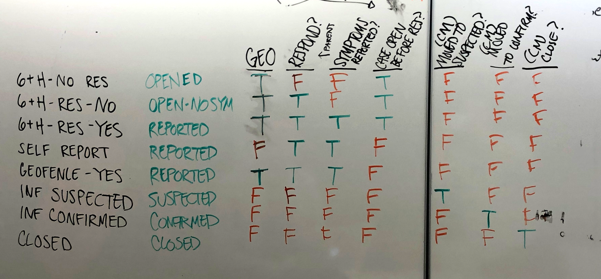
Opioid Addiction Recovery App
2018 - 2019 | Datacubed HealthI am proud to have led the design of this opioid recovery app from challenge submission to bring it to life as an MVP, in development now. It won 2nd place in the RWJF Opioid challenge, was shortlisted for the 2019 Interaction Awards, and received press recognition!
TLDR
Team
Background
ResQ began as a response to a challenge sponsored by the Robert Woods Johnson Foundation (RWJF) and was initially led by Datacubed research scientist Tyler Burleigh."Can you create technology enabled tools to help support and connect individuals affected by opioid addiction?"Social support plays a key role in long-term recovery. Because Datacubed’s research platform already allows participants to pass their data to research admins, we reshaped the model to connect primary users (recovering addicts) with a support network of family and friends. The primary users would be able to log predictive factors using their mobile app, while the support users would be able to monitor the primary users data to know when they should intervene. To address concerns that many who want to help might not best know how, the desktop web app would also provide guidance on how to best encourage and support the primary user.
What science says are the key predictors of relapse
Prior studies about opioid addiction reveal key indicators which predict relapse. The most accurate predictors seem pretty obvious, like how much a person is craving and when a person last used. Others are less intuitive, e.g. a person’s tolerance for ambiguity (essentially how okay they are with uncertainty) and their aversion to risk.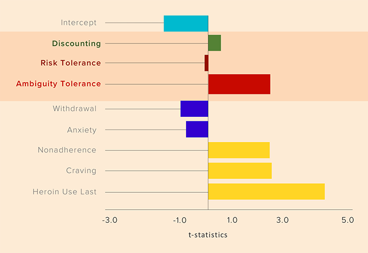
- • Delayed discounting | Impulsivity
- • Stroop | Susceptibility
- • Levy probability | Risk/Ambiguity tolerance
- • Likert survey | Craving, Boredom, Stress, Pain
In a Stroop trial, typically, a word “is matched to the font color of the word (e.g., blue), and on other trials they are mismatched (e.g., red) which creates two competing response tendencies (i.e., red and blue). When mismatched, participants are slower to respond and more likely to make errors, and individual differences in task performance are believed to be diagnostic of decline in cognitive control which underlies certain disorders.” Replacing some of the color words with words related to opioids or heroin (e.g. “dope”) would measure your susceptibility.


Explorations
My fellow UX designer, Jewelia Kim, and I rushed to get wireframes and some (admittedly) extremely-roughly-visual-designed screens out within a day. Here’s what ResQ 1.0 looked like:


Userflows
We were then selected as finalists. I worked with Android developer John Gomez to make a semi-functioning version of the app.At this point, Datacubed made the decision to open up dev resources to make ResQ a real, publicly-available app. So I quickly backpedaled to userflows.
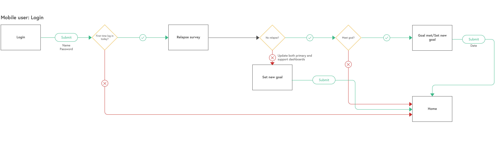
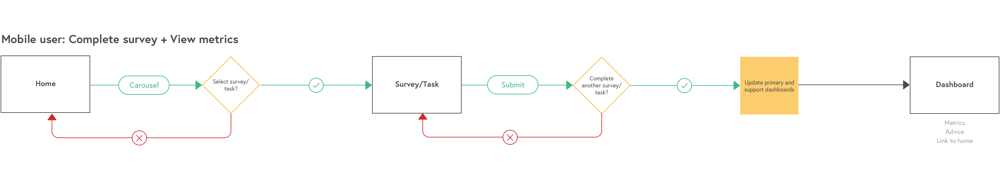
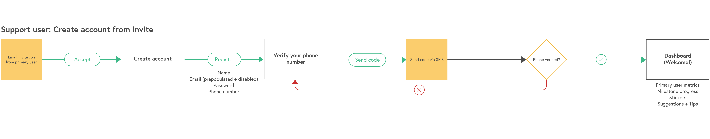
Research
Interviews
As ResQ began to take form as a full-fledged app, developers echoed the same lingering concerns we had that were never fully addressed: “How can we be sure that this is something recovering opioid users want?” We hadn’t done enough to engage with our potential user base to complement our scientific insights—what a way to imply “we know what you need better than you do.”After some deliberation, I decided to get in touch with users on the Opiates Recovery sub-Reddit. I felt like it was the best, non-invasive way to reach that community of recovering opioid users. With the approval of the moderators, I solicited feedback for the app. I had no idea how immensely helpful it would be: two people graciously volunteered to speak more in depth about their personal experiences, and each of the feedback we received shaped the next iteration of ResQ.

Findings
Looking at the response from Reddit, we felt optimistic that our app was generally well-received:- • Commenters saw benefit in calendar app with a record of their past symptoms
- • Acute withdrawal symptoms (5-10 days): “You’re so sick you don’t care about anything”
- • Post acute withdrawal symptoms (10+ days): “You’re bombarded with all those issues once you sober up”
- • 30 day marker: “30 days is huge for a lot of people”
- • Access to AA/NA was key in their recovery
- • “Susceptibility” may trigger fatalistic tendencies among some—i.e. the app is telling me I’m susceptible so my inevitable relapse isn’t up to me
- • Reiterated that physical symptoms are a huge part of recovery and would appreciate guidance on how to alleviate them
- • Most members of the community are pro harm-reduction and safe injection sites
- • The Good Samaritan law protects bystanders when calling 911 about overdose
MVP planning
The user interviews drove us to take a drastically different approach to the interface. While that’s not always ideal, it did give us a fresh start to to think realistically about how it would be developed. Considering the user feedback and the fact that integrating support user capabilities would take a lot more back-end work we just didn’t have the bandwidth for, ResQ version 3 became a self-tracking recovery progress app to be developed in React Native.So based on the feedback we received, our actionable items:
- • Move from a dashboard interface to a calendar interface to look at metrics over ~30 day period
- • Add ability to record symptoms
- • Scrap “Susceptibility” as a factor
- • Support chat > Humi chatbot (one Reddit commenter loved Humi so we wanted to make him more integral)
- • Deliver educational materials/resources (symptoms, AA/NA information, your rights, etc)
MVP design


We also wanted to supplement the Likert scale answers with some of the adorable minion-esque characters (made by our visual designer, Ivan Martinez). But first, we had to figure out a way to quantify the emotions to map them out to 0-4 scale answers. Tyler sent out an internal survey and the results determined which facial expression we’d select for 0-4.


Next steps
We plan to do additional user testing once we have a build, but here some features we already have in the backlog:- • Making it “smarter” so we can make predictions about withdrawal symptoms or relapse based on real world evidence
- • Connecting users to local support programs like NA/AA based on location
- • Support users capabilities

Time Use Diary
2018 | Datacubed HealthFor Y-Combinator Research’s Basic Income study, we built an open-ended interactive timeline for participants to record their activities. With a lot of opportunities for user testing, our design shaped the transfer of this data—from how we prompt the user to process their information for input to the output of quantifiable data for the science team at YCR. It was incredibly rewarding to create a sort of sandbox for users and observe their self-reported outcomes.
TLDR
Team
Background
Y-Combinator Research asked us to build an app for their Basic Income study set to begin in 2019."How does receiving a basic income affect the way people spend their time? Do people spend less time working and more time taking care of family members? Do people drop out of the workforce or work fewer hours and go to school or pursue lower-paying job that they enjoy more? Using state-of-the-art passive data collection, validated with time use surveys, we will examine how recipients of basic income spend their time."YCR needed to capture activity data of income recipients, grouped into general categories, e.g. “work”, “work-related activities” or “leisure.” The task was to be based off of American Time Use Survey—we knew going into it that we had to rebuild a notoriously tedious task.
Explorations
Location-dependent design
Our first pass in the exploratory phase was wholly dependent on location data—we would make assumptions based on your location and time of day (we weren’t yet thinking through the technical feasibility of machine learning). For example, if we noticed that you were at Hale & Hearty at 12:15pm, we would assume that you were having lunch (categorized under “leisure”).Location-dependent enhanced design
We thought through other ways to use location data to make the task easier—specifically, by blocking out chunks based on location and narrowing down the list of activities.
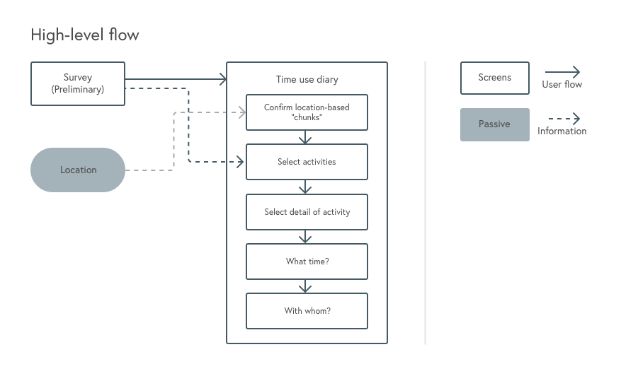
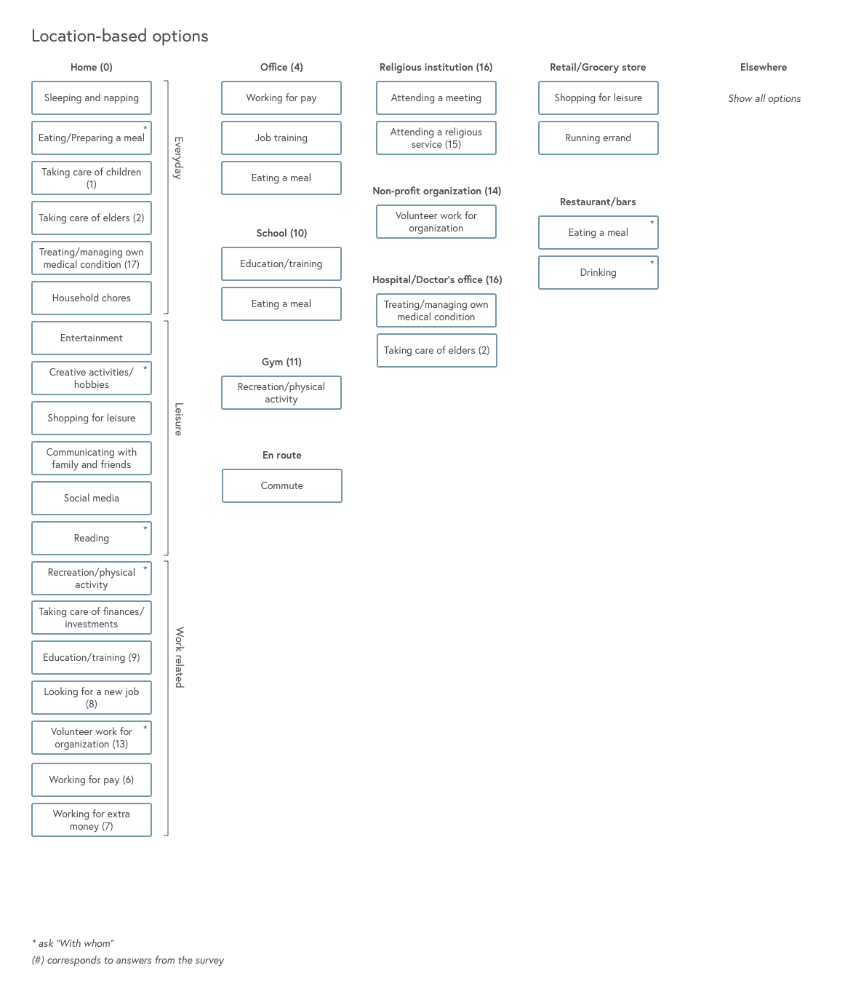
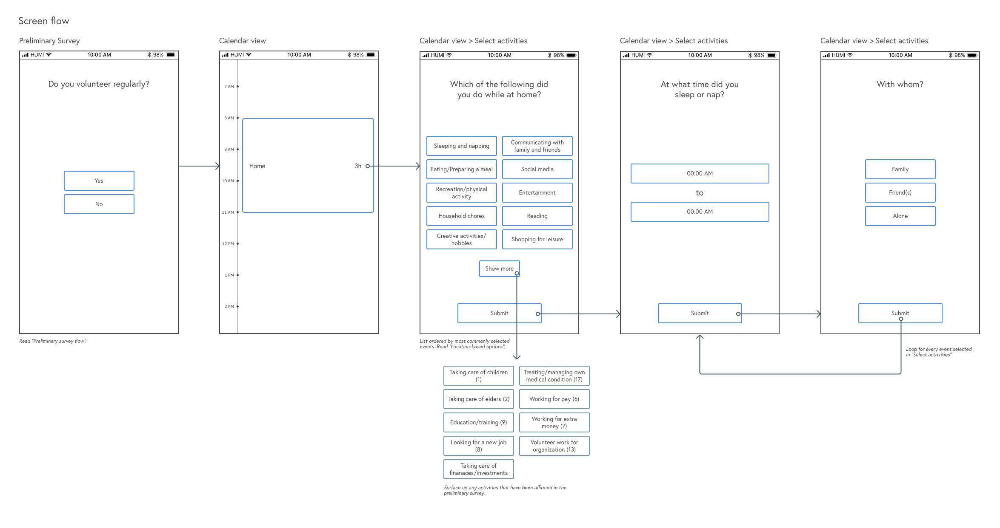
Interface
Location-enhancedOpen-ended Design
We decided that a drag and drop interface would best suit the task. We were hopeful that the tangibility of the interaction would make it interesting for users while keeping the responses open-ended. For convenience, it was logical to keep both the activity list and the timeline exposed at all times.

Research
Usability Test: Paper prototype
Because we weren’t able to ease users’ cognitive load by other means, we had to ensure that all the items in the activities list were mutually exclusive + collectively exhaustive so that users wouldn’t have to think twice about how to mentally map their actual activity to a defined category.Using color blocks (people actually volunteered when they saw these) and a giant timeline to mimic the designs, I asked other employees at Datacubed to recall their activities yesterday and to reproduce it on the timeline.


Usability test: Mobile prototype
Problem: While testing the built version on iOS and Android devices around our shared office, we observed a lot of people getting frustrated while using Android devices. I think I’m explaining this correctly, but—React Native on Android isn’t good at discerning “dragging” in a scrollable area. Because the left side is vertically scrollable, dragging activities in any direction beside precisely horizontal felt lagged.Solution: teach users to tap on the item (which disables the scroll) and then move it out (which would allow them to move it however they wanted).
Data analysis: YCR’s pilot group
Silas Lee, our research intern, ran an analysis for completion time.- • The average person took 135.8 seconds (2.3 min) less the second time around. Users were faster the second time around (hopefully because they learned the behavior)!
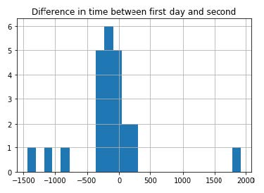
- • In “Other” users wrote in their own responses if any categories were missing. We took notice of the recurring write-in answers and added them as to the list.
- • Some users were conflating “driving” with “commuting” and placed "commuting" while traveling to and from non-work related activities (which YCR has clarified they do not want). So we added "Driving" to the list and made the distinction.
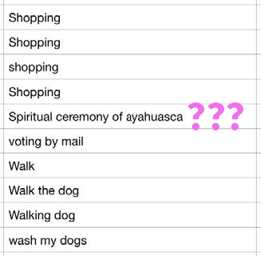
Data analysis: Beta group
Next, we deployed the Time Use Tracker and a feedback survey to our company’s Beta group, a cohort whose data we use to validate surveys and tasks.Interestingly (although not all that relevant), the people who found it the least “Easy to use” were between 35-44 (this age group tends to have the lowest retention rate, presumably because they tend to have the most responsibilities).
In the feedback survey, we slotted in a question that would solicit more discrete responses: “Would you do this everyday?” 17 said they would, 22 said they wouldn’t. In reality, no user is asked to do this every day so expectations were low, but I hoped the question would provoke more extreme responses. Of the users who reported they would not use the Time Use Diary daily:
- 59% of them found it too difficult to remember or just thought it was too tedious (while it was easy to use)
- 27% of them were just not interested in logging their day
- 14% thought it was too difficult
Next steps
We've explored several options we could pick up and deploy at next client’s request- • Run usability testing to catch pain points in the moment
- • Tutorial tidbits on an as-needed basis
- • Clarify requirements in the tutorial
- • Teach both ways for users to stretch the time of activity
Cognitive Games
2017 - 2019I worked together with React Native developer Marina Hoashi and research scientist Tyler Burleigh PhD to transform cognitive tasks—which have traditionally been conducted on paper or desktop (often crudely copied from said paper version)—into mobile games. The three of us negotiated the middle ground in creating a task that’s feasible, enjoyable, and scientifically-validated. Visual assets are a combined effort between amazing visual designer Ivan Martinez and me.
TLDR
Team
Ongoing process
We want to make sure the array of tasks are exciting on their own while also aesthetically cohesive as a library. We are currently building a design pattern for game mechanics—such as feedback, scoring, and streaks—based on what we want to incentivize. To push the design further, we attach a strong theme to each of them. These themes have become very important because they dictate both the visual assets and the animations.Iterations
In order to scientifically validate tasks, we go through multiple iterations and test after each one. A lot of times, it's a matter of changing the timings, but they tend to have design consequences (e.g. Go/Nogo: We need to decrease the time the stimulus was on screen, but realistically, the sushi can't disappear before the user "grabs" it. Our solution: we cover the sushi with a lid). Testing for validation also gives me extra opportunities to ask usability questions.Game 1: Go/No-go
The Go/No-go task test for impulsivity. It's simple: there are two sets of stimuli, and the player presses a button for the "positive" stimuli appears and does not respond when the "negative" stimuli appears. You can play with a more-traditional version here.The trick for this was to incentivize speed while upholding the goal to be accurate. Our solution: more points for faster responses. Here's the version we built (it's sushi-themed):
Game 2: Flanker
The Flanker task is where the player is presented with either a "congruent" trial—all arrows pointing in one direction—or an "incongruent" trial—the arrow in the middle is pointed the opposite direction. While testing the Flanker task, we wanted to see if there was a correlation between the shape of the ducks (geometric to organic) and the test results. Alas, we didn't find anything conclusive. The third duck gave us the best results (most interference effect = incongruent - congruent effects) so we stuck with him.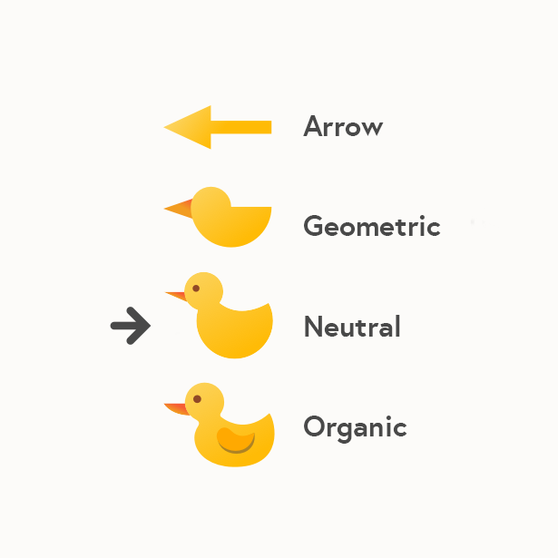
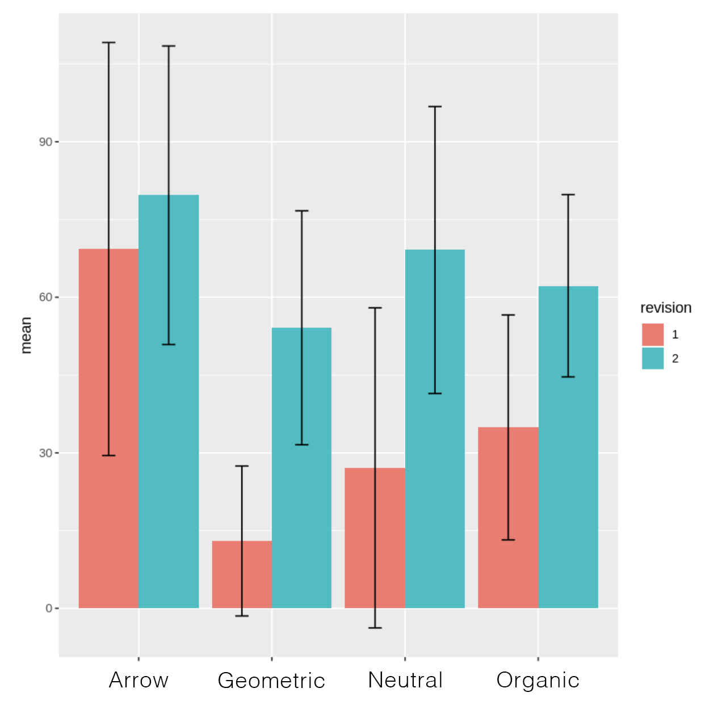
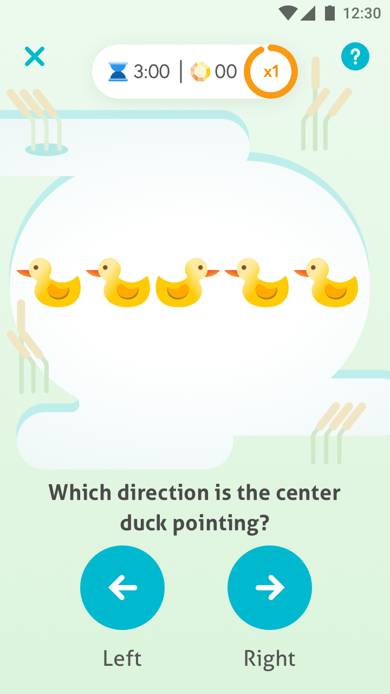
Game 3: N-back
IIn this task, the player is shown one item per trial, and they must try to remember a sequence of "N" items, from the one on-screen to "N" items back. While the "N" could be any number, 2 is standard (not too easy nor too difficult). The player answers "Match" if the currently displayed item is the same as the one they saw 2 items ago.We went with a parade theme to maintain the sense of sequence (the less parade-like version of N-back can be found here). Because the task requires hyperfocus, we integrated the feedback into the background—although in most other tasks, we use notification toasts for feedback.
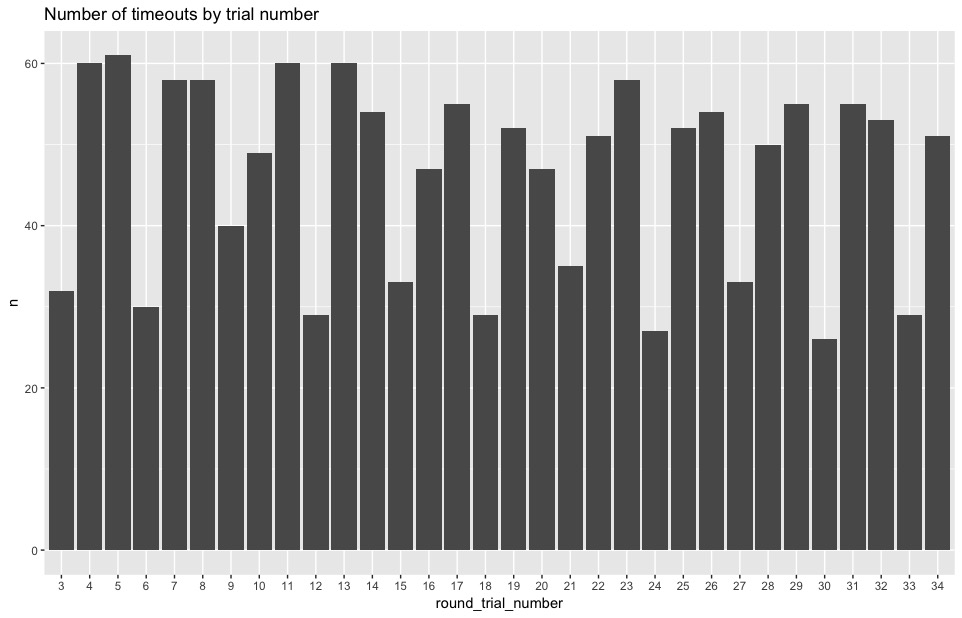
Game 4: Balloon effort
The original Balloon Effort task is a effort-based decision-making task. The player is required to decide between two options, which differ in effort and reward amount. The "effort" refers to the amount of times the player must repeat a mundane exercise (i.e. pressing alternating buttons).In adapting this to mobile, we want to test out "swiping on a narrow path" as the mundane gesture. This has not yet been developed or tested.